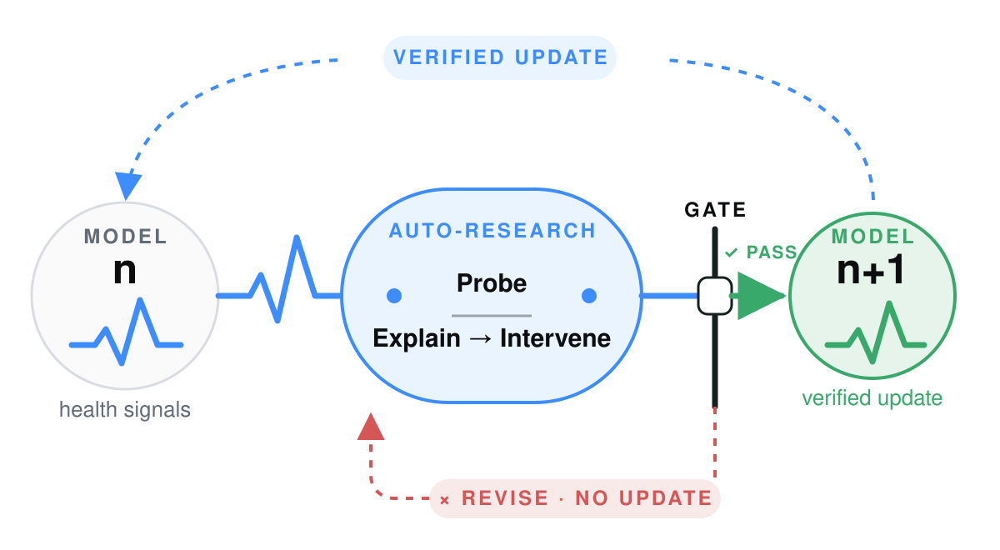

A self-improving loop that repairs open models automatically — and verifies every fix.
An eval score is a temperature reading. EvalVitals runs the lab: probe failures, form mechanisms, test them on unseen cases, and climb the repair ladder. Only a held-out win updates the model; the healthier model becomes the next subject.

implemented
in the registry
over the analyzer suite
L1 → L4
committed, no install needed
Five stages, and no hand-off between them.
The agent writes and runs its own analysis code, selects the statistical tools, proposes the hypotheses, generates the repair candidates, and works out which tier a given mechanism needs. Two stages can send the loop backwards — a refuted hypothesis returns to probing, and a repair candidate that fails moves to the next tier within the ceiling you set. Once every tier up to that ceiling is exhausted, the loop recommends raising it rather than doing so itself.
You supply the question and the ceiling. Everything between is unattended.
Inside the loop.
Four flowboards, M1 through M5, run top to bottom in execution order — each one's input is the last one's output. Collapse any you don't need.
M1 Discover & Probefailure discovery · protocol-guided Label which cases fail, then let the protocol choose what to measure on them. Stage details
Which cases failed, and what's worth measuring on them?
Failure discovery
Run, score, label — pass or fail.
case_idlabelprovenanceProtocol-guided router
A judge reads the protocol, then routes — with a recorded reason.
Analyzer library
Typed signal matrix
One measurement per case; missingness stays explicit.
case_idlabelsignal.*coveragemissing_reasonprovenanceM2–M3 Explore → Diagnoseexploratory data analysis · hypothesis + adversarial critique Exploratory data analysis on M1's signals — writing and running real analysis code — then competing falsifiable hypotheses against what it finds. Stage details
Which pattern deserves a test—and how could it lose?
Signal + label table
M1's measurements, joined with pass/fail — the table both paths below share.
Optional EDA
Agent-written code proposes candidates, descriptive only.
Stats engine
Select → run (effect + CI + e-value) → e-BH correct.
Confound caught: a p=0.080 catalyst signal was really a 21° temperature gap.
Competing hypothesis contracts
Every hypothesis ships with its test — no test, no hypothesis.
Test spec
Lock the claim before sealed evidence is visible.
statementpredictioncontrolfalsifiertest_designhypothesis_idstatementpredictiontestcontrolthresholdfalsifiertest_designM4 Verifyheld-out hypothesis validation Pass a statistical gate and a protocol-consistency gate on sealed cases — both, or it doesn't advance. Stage details
What survives evidence that discovery never touched?
Precommitted packet
606 total364 discovery242 sealedFrozen runner
Statistical + protocol
Three verdict paths
hypothesis_ideffectuncertaintymultiplicityprotocol_consistentverdictreasonM5 Intervene & Repairmechanism intervention · repair · verification Test the mechanism with a real intervention, then search, freeze and paired-verify a repair. Stage details
Is the mechanism causal, and what's the cheapest repair that holds?
Causal probe
Injected check, param sweep, or a 10% fail-gap split. Evidence, not a fix yet.
Candidate lab
Discovery-side comparison only.
Lock winner B
Candidate, baseline, evaluator and success rule become immutable.
Same cases, two arms
Frozen candidate versus unchanged baseline.
interventiontiercandidatebaselinepaired_deltarescuesharmsdecision- A model or its logs. An open-weight checkpoint to probe, or existing eval output as JSON, JSONL, CSV or Parquet.
- A question, in plain language. "What predicts the failures here?"
- A ceiling. How invasive a repair may get, from
L1toL4.
- Verdicts, not vibes. Each candidate signal marked confirmed or refuted on held-out cases, corrected for how many were tried.
- An audit trail.
analysis.pyas it ran, the normalized records, every figure and table, and the run's event log. - A repaired model, or the reason there isn't one. A validated fix measured against the untouched baseline — or a recipe and the tier it needs.
Escalating through the repair ladder.
The lines above the divider are the system's real control flow on the committed hallucination example. Below it, in violet, is a projection of one escalated fine-tune — strategy choice, cost at the published H200 rate, and the outcome a repair would have to demonstrate.
Bars are on a true linear scale — L1–L3b really are that close to flat. Δ is signed so "more improvement" always points right; L4's value mirrors the −12.5pp hallucination-rate drop from the walkthrough below.
$ evalvitals investigate qwen3-vl-8b-instruct \ --probe pope-adversarial --holdout 0.4 --max-tier L4 M1 probe ············ 606 cases · 126 fail (20.8%)M2 explore ············ 23 figures · 4 candidate signalsM3 diagnose ············ 2 falsifiable hypothesesM4 verify ············ held-out n=242 · e-BH α=0.05 ✓ peaked_attention stat + protocol: SUPPORTED CI +0.360..+0.589 ✗ top1_share_high refuted ✗ peripheral_attn refuted M5 intervene ············ peaked_attention Δ +14.2pp (causal, not yet a fix) └ repair — climbing the ladder, ceiling L4 L1 prompt rewrite ✗ +0.4pp p=0.41 vs baseline L2 attention-guided crop ✗ +1.2pp p=0.19 vs baseline L3b attention reweight ✗ +1.1pp p=0.22 vs baseline all candidates exhausted below L4 ↑ escalate → L4 parameter space fine-tune recipe written → finetune_spec.json base Qwen3-VL-8B-Instruct (open weights) data 1,204 pairs drawn from the confirmed mode method LoRA r=16 · 2 epochs · bf16 re-test 242 held-out cases vs unmodified baseline ↺ L4 executor available — plain LoRA on the LLM ships today; this walkthrough continues below as a projection. ┄┄┄ below this line: projected on target hardware, not measured ┄┄┄ P? strategy selection — confirmed mode: over-concentrated attention ▸ P1 attention-grounding LoRA targets the measured mechanism ▸ P2 contrastive DPO hallucinated yes / correct no · P3 counterfactual SFT held in reserve · P4 full fine-tune held in reserve $$ cost estimate — 8 × H200 SXM @ $2.30/GPU-h P1 LoRA 0.8 h $14.72 P2 DPO 2.4 h $44.16 re-test 0.3 h $5.52 ────────────────────────────── total 3.5 h $64.40 ▶ projected run — 8 × H200, bf16, grad-ckpt P1 step 200/1200 loss 0.842 ▓▓▒░░░░░░░ gpu 91% P1 step 700/1200 loss 0.517 ▓▓▓▓▓▓░░░░ gpu 93% P1 step 1200/1200 loss 0.388 ▓▓▓▓▓▓▓▓▓▓ converged P2 step 900/900 loss 0.204 ▓▓▓▓▓▓▓▓▓▓ converged ↺ re-test — 242 held-out cases vs unmodified baseline hallucination rate 34.4% → 21.9% Δ −12.5pp McNemar paired p = 0.0007 repair holds no-free-lunch check present-object detection 100% → 99.6% Figures above are a projection of what one escalated investigation would cost and produce on this ladder path. Running it end-to-end through today's generic LoRA executor is the gap.
Repairs are ordered by how deeply they cut into the model.
Each rung buys causal reach and costs deployability. The ceiling is yours to set — escalation is recommended, never automatic.
FixAgent(finetune_pool=...)), validated through the same paired McNemar + e-value machinery as every other tier. Other recipe shapes are always written, not yet executed.Inside L4: the parameter-space strategies
The confirmed mode decides which repair is worth paying for. In the worked example — hallucinations show over-concentrated attention — that points at grounding, not more data. The executor that runs today trains a plain LoRA adapter on the language model from the diagnosis-only pool; the strategy menu below, including any custom loss shaping, is what the system can select among and write a recipe for — not yet what a single executor call runs end to end. Ordered by cost:
P1–P4 above: design space, not shipped code — the shipped L4 executor runs a generic LoRA fine-tune, not this specific strategy menu.
EvalVitals verifies a diagnosis before it becomes a repair.
A senior researcher can list ten plausible mechanisms for a failure; an agent will list fifty. Fluent explanations are easy to produce, and the loop tells you which of them hold on your data.
Against current practice
| Approach | How the hypothesis is formed | How it is tested | What the conclusion rests on |
|---|---|---|---|
| Hire an experimentalist | Experience and intuition, a handful of candidates at a time | An ablation designed after seeing the data, weeks of senior time per model | The analyst — one researcher's reading of the data, and the ablation they chose to run |
| Let an agent enumerate | Dozens of plausible candidates at once | A full fine-tune for each one you can afford | The budget — whichever candidates you could afford to test |
| EvalVitals | Drawn from published repair results and the memory of past runs | Cross-validated while exploring, then decided once on a separate sealed set | The data — a measured effect on reserved cases, reproducible from the run log |
A run can end with a question rather than a repair — on the committed example, one signal of four survived adjudication, and every candidate below L4 finished level with the baseline. Learning that a mechanism remains open, before a cluster pays for it, is the cheapest result the loop returns.
Anyone who ships or depends on an open-weight model.
The buyer is anyone who cannot currently answer "why did it fail, and did the fix work?"
Before you publish a checkpoint
Find and repair the failure modes your benchmark score hides, and ship the evidence bundle alongside the model card.
When "it got better" is not enough
Clinical, financial and safety-critical settings need a documented mechanism and a verified repair, not a moved metric.
Your tune made it worse, somewhere
The aggregate barely moved but a slice regressed. Locate the slice, identify the mechanism, and test whether reverting or retraining fixes it.
Which open checkpoint for your failure
Compare candidates on the failure modes that matter to your product rather than on a public leaderboard.
A production failure needs a cause
Turn a customer-visible incident into a diagnosed mechanism and a repair that is measured against the model you were already running.
Does that published fix generalize?
Re-test a reported mechanism and its intervention on held-out cases and across model scales, before adopting it.
The engagement, minus week three
Run the loop first and the engagement opens with a diagnosed mechanism instead of spending three weeks arriving at one.
Point it at your eval logs.
The core install stays lightweight — no Torch required. EvalVitals writes an auditable analysis bundle instead of returning only prose.
pip install evalvitals
evalvitals explore ./results \ --backend codex \ -q "What distinguishes failed cases from successful ones?" \ --serve-report
evalvitals serve evalvitals_explore_output